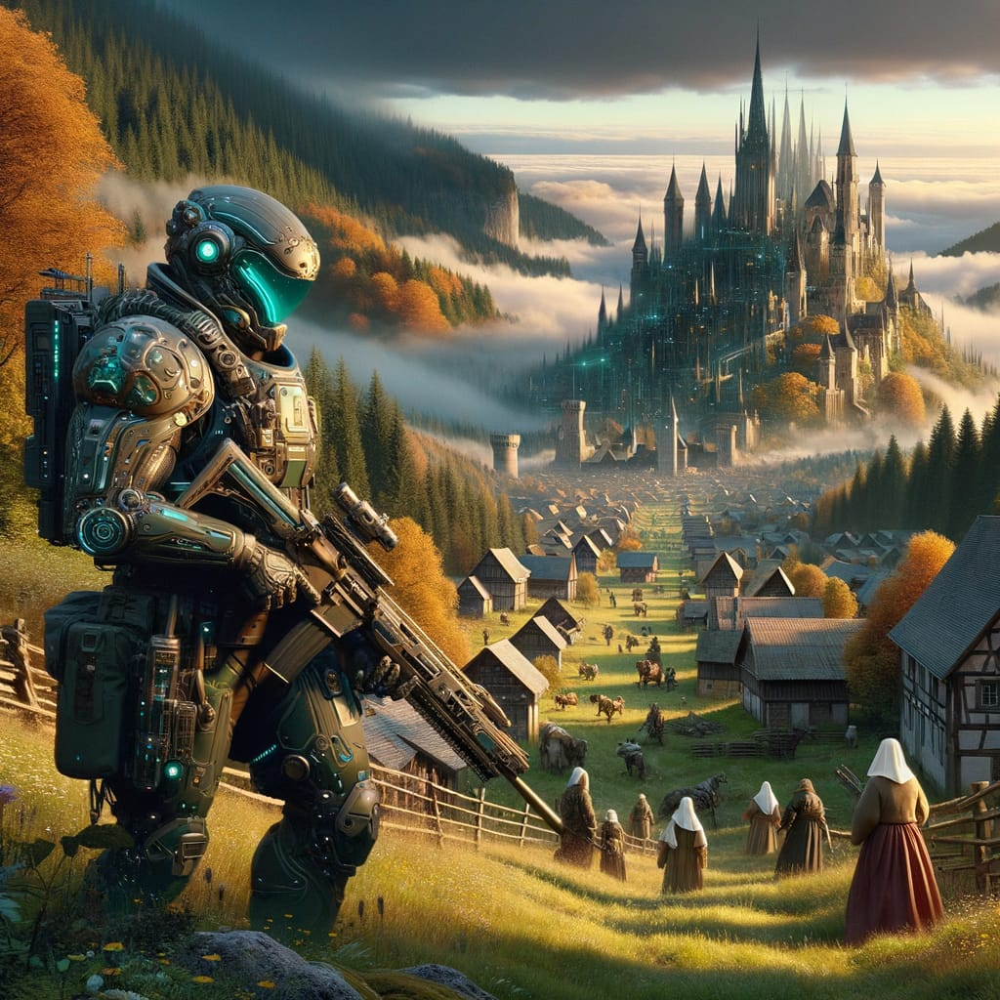
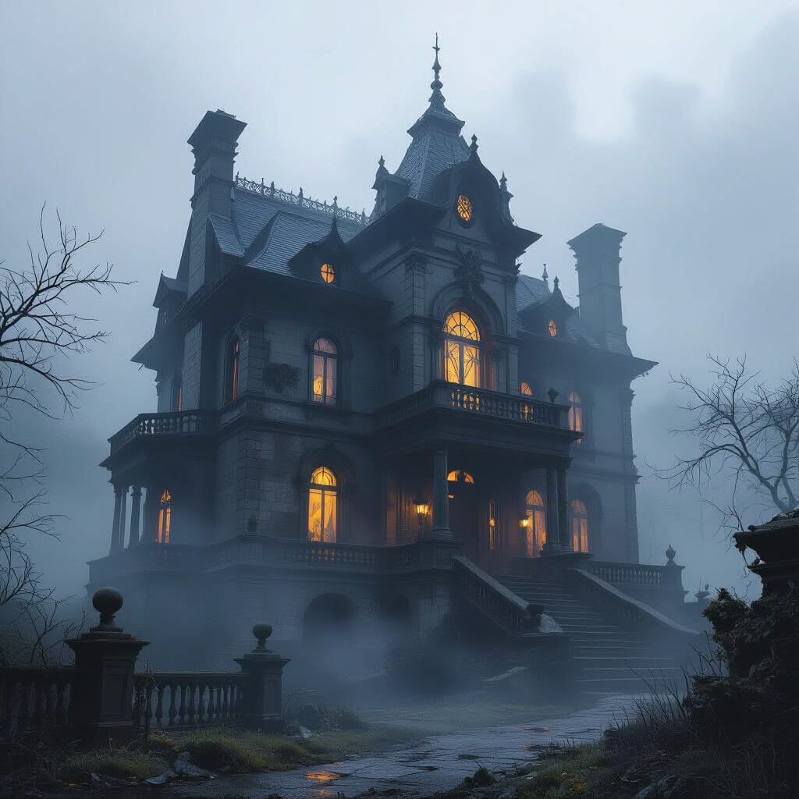

NightCafe workflow upgrade: faster iterations, stronger control, and cinematic “three-scene” worldbuilding
NightCafe’s recent model and workflow direction makes its strategy pretty clear. The platform is moving away from the idea of generating a single impressive image and toward supporting a repeatable creative pipeline. The real benefit is not simply higher quality output, but the ability to create a consistent visual world across multiple scenes, characters, and environments without constantly fighting randomness.
1) Flux models: cleaner anatomy, better text, and higher-end options like Flux Ultra
NightCafe has been highlighting Flux models as one of its stronger professional options, emphasizing improvements in prompt understanding, text rendering, and anatomical accuracy. The platform also promotes Flux Ultra as a higher-end version capable of producing larger images and offering a “Raw” mode designed to reduce the overly processed aesthetic that sometimes appears in AI-generated images.
These improvements matter when you are building a recurring character or concept. If the baseline anatomy, structure, and text elements behave correctly, creators waste fewer generations fixing mistakes and can instead focus on refining style and storytelling elements. Better text rendering also allows for poster designs, title cards, signage, or UI-style graphics that remain readable instead of collapsing into distorted lettering.

2) ControlNet and guided workflows: reducing randomness in composition
Another important piece of NightCafe’s workflow evolution involves ControlNet-style guidance. The platform has published explainers on how ControlNet works and how it allows creators to guide structural elements such as pose, perspective, and composition instead of relying entirely on text prompts.
This becomes particularly useful when creating hybrid environments such as futuristic soldiers in medieval settings. ControlNet guidance helps maintain stable shot composition so that creators can iterate on armor, lighting, or environmental details without losing the overall structure of the scene. Instead of producing randomly framed images each time, the workflow starts to resemble a controlled cinematographic process.

3) SDXL Lightning models: speed changes creative behavior
NightCafe has also promoted SDXL Lightning models as faster generation options. Multiple Lightning variants have appeared in recent updates, emphasizing the platform’s push toward quicker iteration cycles.
Speed has a surprisingly large impact on creativity. When images generate quickly, creators are far more willing to experiment with different lighting conditions, prompt variations, camera angles, and environmental elements. Scenes such as foggy haunted houses or atmospheric landscapes benefit particularly from rapid iteration because the final look often emerges through gradual adjustments rather than a single perfect prompt.
My take
These three example scenes illustrate a practical workflow pattern: a signature character, a broader world, and a specific location within that world. NightCafe’s strength increasingly comes from stacking tools that support this pipeline. Faster generation through Lightning models encourages experimentation, Flux models improve baseline image correctness, and ControlNet-style guidance stabilizes composition. Individually these features are helpful, but together they transform image generation from a one-off novelty into a repeatable creative workflow.